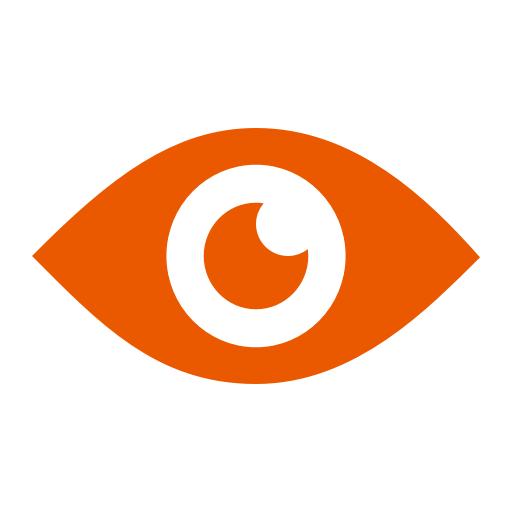

Project 10
Blink
A small Windows utility that periodically reminds the user to look away from the screen, focus at a distance, and blink.
- Completed
- 2023
- Platform
- Windows
- Stack
- Python · win10toast
- Packaging
- PyInstaller
Browser simulation
Try the reminder loop in twenty seconds.
The desktop version waits twenty minutes. This shortened timer demonstrates the same notification flow without installing anything.

00:20
Ready for a short test
Look 20m into the distance
Focus on a distant object for 20 seconds and blink 20 times.
Original behavior
A deliberately small desktop utility.
- Run quietlyThe packaged Python application stays out of the way.
- Wait 20 minutesA timer tracks continuous screen time.
- Show a toastWindows prompts the user to refocus and blink.
- RepeatThe loop resets after the short eye break.